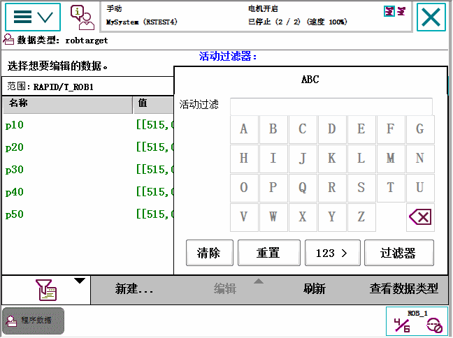
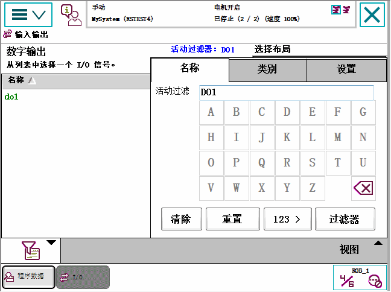
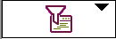
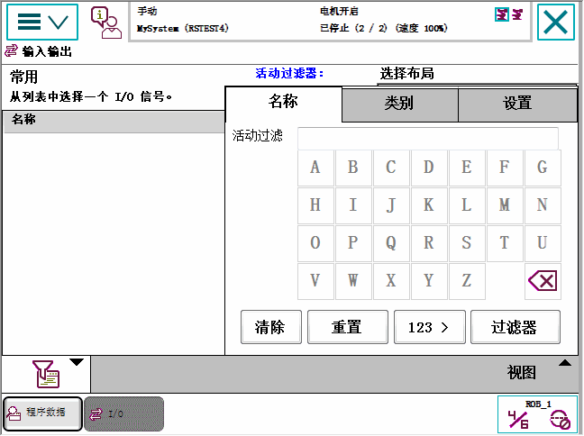

在数个 FlexPendant 菜单中，您可以使用过滤功能。 此项功能非常有用，例如在查看数据类型实例时，实例的数量可能会超过可查看范围。 过滤掉以特定字符开头的实例可减少选项数量。
根据数据的类型，您可按照字母或数字过滤数据。
过滤器功能将保持开启状态，并直到当前过滤器被删除为止（例如因为点击了重置）。

 | 注意 过滤 I/O 信号时，其选项比过滤其他许多类型的数据时都多。例如，
|

Active filter（活动过滤器） | 显示当前过滤器。 过滤器同时显示于项目列表顶部。 |
Clear（清除） | 清除当前过滤器文本框中的文本。 |
Reset（重置） | 删除过滤器字串。 |
123 / ABC | 根据数据的类型，可以用一种或者多种过滤数据的方法，比如数字型、字母型。 |
Filter（过滤器） | 应用过滤器。 |
 | 打开和关闭 Active filter（活动过滤器）菜单。 |
I/O 信号过滤器可设置为如果数据量超过预定义的数量便自动显示。

操作 | |
1. | 点击 Change（更改）编辑设置以控制何时应显示过滤器对话框。 |
2. | 输入一个新的数字，定义不使用过滤器的上限值。然后点击 Done（完成）。 |
3. | 点击 Virtuals（虚拟），选择是应列出所有信号还是只列出虚拟或者非虚拟信号。 |